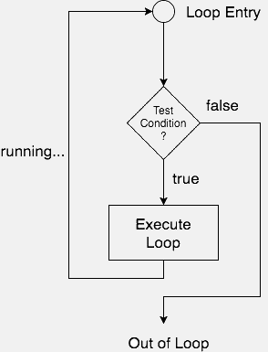

How to use Loops in C
In any programming language including C, loops are used to execute a set of statements repeatedly until a particular condition is satisfied.
How it Works
The below diagram depicts a loop execution,

As per the above diagram, if the Test Condition is true, then the loop is executed, and if it is false then the execution breaks out of the loop. After the loop is successfully executed the execution again starts from the Loop entry and again checks for the Test condition, and this keeps on repeating.
The sequence of statements to be executed is kept inside the curly braces { } known as the Loop body. After every execution of the loop body, condition is verified, and if it is found to be true the loop body is executed again. When the condition check returns false, the loop body is not executed, and execution breaks out of the loop.
Types of Loop
There are 3 types of Loop in C language, namely:
whileloopforloopdo whileloop
while loop
while loop can be addressed as an entry control loop. It is completed in 3 steps.
- Variable initialization.(e.g
int x = 0;) - condition(e.g
while(x <= 10)) - Variable increment or decrement (
x++orx--orx = x + 2)
Syntax :
variable initialization;
while(condition)
{
statements;
variable increment or decrement;
}Example: Program to print first 10 natural numbers
#include<stdio.h>
void main( )
{
int x;
x = 1;
while(x <= 10)
{
printf("%d\t", x);
/* below statement means, do x = x+1, increment x by 1*/
x++;
}
}1 2 3 4 5 6 7 8 9 10
for loop
for loop is used to execute a set of statements repeatedly until a particular condition is satisfied. We can say it is an open ended loop.. General format is,
for(initialization; condition; increment/decrement)
{
statement-block;
}In for loop we have exactly two semicolons, one after initialization and second after the condition. In this loop we can have more than one initialization or increment/decrement, separated using comma operator. But it can have only one condition.
The for loop is executed as follows:
- It first evaluates the initialization code.
- Then it checks the condition expression.
- If it is true, it executes the for-loop body.
- Then it evaluate the increment/decrement condition and again follows from step 2.
- When the condition expression becomes false, it exits the loop.
Example: Program to print first 10 natural numbers
#include<stdio.h>
void main( )
{
int x;
for(x = 1; x <= 10; x++)
{
printf("%d\t", x);
}
}1 2 3 4 5 6 7 8 9 10
Nested for loop
We can also have nested for loops, i.e one for loop inside another for loop. Basic syntax is,
for(initialization; condition; increment/decrement)
{
for(initialization; condition; increment/decrement)
{
statement ;
}
}Example: Program to print half Pyramid of numbers
#include<stdio.h>
void main( )
{
int i, j;
/* first for loop */
for(i = 1; i < 5; i++)
{
printf("\n");
/* second for loop inside the first */
for(j = i; j > 0; j--)
{
printf("%d", j);
}
}
}1 21 321 4321 54321
do while loop
In some situations it is necessary to execute body of the loop before testing the condition. Such situations can be handled with the help of do-while loop. do statement evaluates the body of the loop first and at the end, the condition is checked using while statement. It means that the body of the loop will be executed at least once, even though the starting condition inside while is initialized to be false. General syntax is,
do
{
.....
.....
}
while(condition)Example: Program to print first 10 multiples of 5.
#include<stdio.h>
void main()
{
int a, i;
a = 5;
i = 1;
do
{
printf("%d\t", a*i);
i++;
}
while(i <= 10);
}5 10 15 20 25 30 35 40 45 50
Jumping Out of Loops
Sometimes, while executing a loop, it becomes necessary to skip a part of the loop or to leave the loop as soon as certain condition becomes true. This is known as jumping out of loop.
1) break statement
When break statement is encountered inside a loop, the loop is immediately exited and the program continues with the statement immediately following the loop.

2) continue statement
It causes the control to go directly to the test-condition and then continue the loop process. On encountering continue, cursor leave the current cycle of loop, and starts with the next cycle.